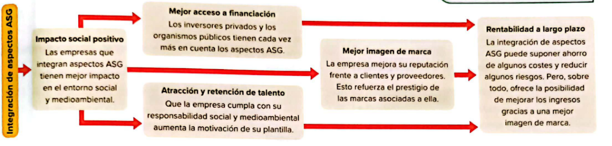

<!doctype html>
<html lang="es"></html>
  <head>
    <meta charset="utf-8">
    <meta name="viewport" content="width=device-width, initial-scale=1">
    <link href="https://cdn.jsdelivr.net/npm/bootstrap@5.3.3/dist/css/bootstrap.min.css" rel="stylesheet">
    <link href="https://getbootstrap.com/docs/5.3/assets/css/docs.css" rel="stylesheet">
    <title>SostDia2</title>
    <script src="https://cdn.jsdelivr.net/npm/bootstrap@5.3.3/dist/js/bootstrap.bundle.min.js"></script>
  </head>
  <body class="p-3 m-0 border-0 bd-example m-0 border-0">

    <!-- Example Code -->
    
        
    <div class="accordion" id="accordionExample">
      <div class="accordion-item">
        <h2 class="accordion-header">
          <button class="accordion-button" type="button" data-bs-toggle="collapse" data-bs-target="#collapseOne" aria-expanded="true" aria-controls="collapseOne">
            Diseño de estrategias ASG
          </button>
        </h2>
        <div id="collapseOne" class="accordion-collapse collapse show" data-bs-parent="#accordionExample">
          <div class="accordion-body">
            Las empresas desarrollan estrategias ASG analizando su entorno y formulando medidas alineadas con la sostenibilidad. Estas estrategias deben abordar:
            <br>
            <br>
            Riesgos ASG: Factores ambientales, sociales y de gobernanza que pueden afectar negativamente la rentabilidad y continuidad del negocio.
           <br>
           <br>
            Compromisos y políticas ASG: Principios y acciones concretas para mitigar estos riesgos y aprovechar oportunidades. 
        </div>
      </div>
      <div class="accordion-item">
        <h2 class="accordion-header">
          <button class="accordion-button collapsed" type="button" data-bs-toggle="collapse" data-bs-target="#collapseTwo" aria-expanded="false" aria-controls="collapseTwo">
            Normas Europeas de Información
          </button>
        </h2>
        <div id="collapseTwo" class="accordion-collapse collapse" data-bs-parent="#accordionExample">
          <div class="accordion-body">
            La UE regula el marco ASG a través de la Directiva sobre Sostenibilidad (NEIS 2022/10) y el Reglamento Delegado 2023/2772.
            <br>
            <br>
            Las empresas deben utilizar este marco para organizar y reportar su información de sostenibilidad.
            <br>
            <br>
            Desde 2013, la UE exige incluir un estado no financiero dentro del informe de gestión, reflejando la evolución del negocio y sus riesgos.
            <br>
            <br>
            Este informe sigue las Normas Europeas de Información sobre Sostenibilidad (NEIS), que establecen cómo reportar los impactos, riesgos y oportunidades en materia ASG.
        </div>
    </div>
    <br>

          
    <!-- End Example Code -->
  </body>
</html>